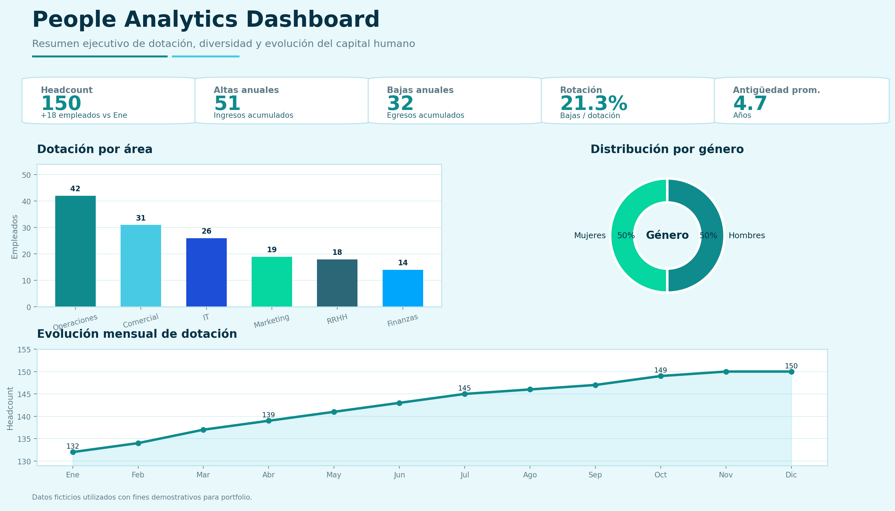
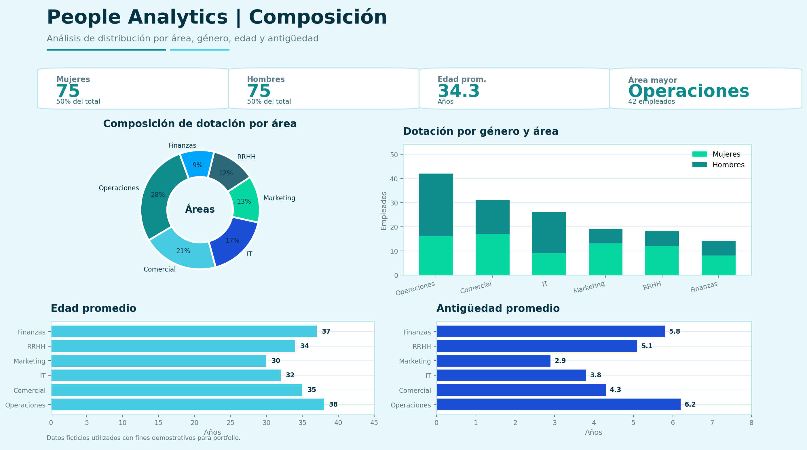
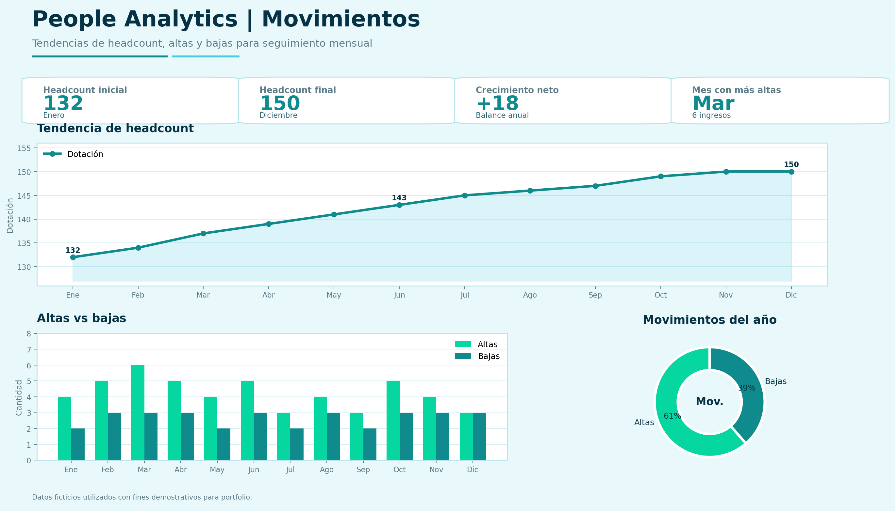

Dashboard orientado al análisis de datos de Recursos Humanos para apoyar la toma de decisiones mediante métricas, visualizaciones y seguimiento de indicadores clave.
Este proyecto tiene como objetivo construir un tablero de People Analytics que permita visualizar información relevante sobre la dotación, distribución de empleados, evolución de indicadores y principales métricas de Recursos Humanos.
Diseñar una solución analítica que facilite la lectura de datos de RRHH y ayude a transformar información operativa en insights útiles para la gestión y la toma de decisiones.
El dashboard organiza datos de Recursos Humanos para convertirlos en indicadores visuales, facilitando el análisis y seguimiento de la gestión de personas.
El proyecto parte de una base de datos estructurada con información de empleados, áreas, fechas de ingreso, estado laboral y otros campos relevantes para el análisis.
Los datos se organizan y preparan para asegurar consistencia, evitar duplicados y permitir una correcta lectura de los indicadores.
Se definen métricas clave de People Analytics para analizar la composición de la dotación, evolución del personal y distribución por variables relevantes.
La información se presenta mediante gráficos, tarjetas e indicadores visuales que permiten una lectura rápida y ejecutiva del estado de la organización.
Capturas del dashboard de People Analytics utilizadas como vista previa del proyecto.


